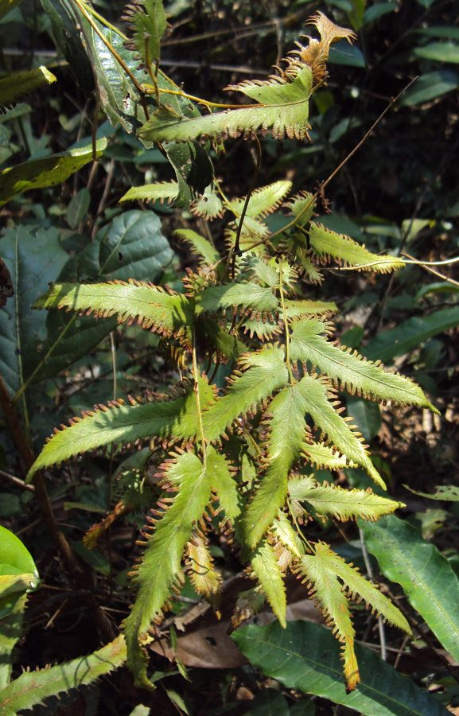

मेडनहेयर क्रीपरMaidenhair Creeper
Lygodium flexuosum · Lygodiaceae · FLR-0417

- Scientific name वैज्ञानिक नाम
- Lygodium flexuosum (L.) Sw.
- Family कुल
- Lygodiaceae
- Hindi हिंदी
- मेडनहेयर क्रीपर
- Local names स्थानीय नाम
- maidenhair creeper, lygodium fern
- Status here यहाँ की स्थिति
- native
- Movement आवागमन
- Resident, here all year
- Known from कहाँ दर्ज
- Others have published records from the wider Awadh–Purvanchal plain, none yet from Basti–Ayodhya अवध–पूर्वांचल से दूसरों के प्रकाशित अभिलेख, बस्ती–अयोध्या से अभी नहीं
- IUCN IUCN
- not evaluated
- Review समीक्षा
- not yet reviewed
When to look कब देखें
Expected mainly in January, February, July, August, September, October, November, December. मुख्यतः जनवरी, फ़रवरी, जुलाई, अगस्त, सितंबर, अक्टूबर, नवंबर, दिसंबर में अपेक्षित।
Uses and possibilities उपयोग और संभावनाएँ
“Traditional medicine” means a documented traditional use, not a claim that it works. Nothing on this page is medical advice.
Drawn from the documented uses in the profile below, where each is labelled traditional, current or a research lead. All uses →
Tell it apart from इनसे अलग पहचानें
मेडनहेयर क्रीपर / Maidenhair Creeper
Lygodium flexuosum (L.) Sw. — Lygodiaceae
मेडनहेयर क्रीपर — यह नम जंगलों, पुराने बागों और बांस की झाड़ियों में ऊपर चढ़ने वाली एक बहुत ही अनोखी फर्न है। अन्य फर्नों के विपरीत, इसकी पत्ती की मुख्य डंडी (रैकिस) एक बेल की तरह लगातार बढ़ती है और झाड़ियों पर लिपटती चली जाती है। इसकी पत्तियाँ बारीक कटी होती हैं और प्रजनन वाली पत्तियों के किनारों पर कंघी जैसे छोटे उभारों में बीजाणु बनते हैं।
Quick Identification त्वरित पहचान
| Feature | Description |
|---|---|
| Plant habit | Slender, twining or scrambling perennial climbing fern |
| Rachis | Indeterminate, wiry, climbing, branching indefinitely over supporting shrubs |
| Sterile pinnules | Compound or lobed; leaflets oblong-lanceolate, serrulate, glabrous or hairy |
| Fertile pinnules | Margins fringed with prominent comb-like soral spikes or lobes |
| Sori | Borne in two rows on narrow marginal lobes, each covered by a scale-like indusium |
| Rhizome | Short-creeping, subterranean, densely covered with dark brown to blackish hairs |
Field tip: Look for a delicate climbing fern scrambling up bushes, featuring wiry stems and leaflets whose edges are fringed with tiny comb-like spore spikes.
हिंदी: झाड़ियों पर चढ़ने वाली फर्न जिसकी पत्तियों के किनारों पर कंघी जैसे बीजाणु वाले उभार बने होते हैं।
Morphology आकारिकी
Measurement not available in consulted sources.
A climbing, twining perennial fern scrambling over shrubs and understorey vegetation. Rhizome subterranean, short-creeping, branched, densely clothed with dark brownish-black multicellular hairs. Fronds (leaves) climbing, of indefinite growth; rachis slender, wiry, flexuous, twining dextrorsely, yellowish-brown or stramineous, sparsely pubescent or glabrous.
Pinnae alternate on the climbing rachis, branching into secondary pinnae; sterile pinnules pinnate or bipinnate, leaflets oblong-lanceolate, acute or obtuse at the apex, cordate or truncate at the base, margins finely serrulate, membranous to subcoriaceous, glabrous or puberulous along the veins, veins free and repeatedly forked.
Fertile pinnules usually narrower, margins deeply cut into protruding, finger-like or comb-like soral spikes (lobes). Sori borne in two alternate rows along the specialized marginal lobes; each sporangium solitary on a veinlet and protected by an individual scale-like indusium opening outwardly. Spores tetrahedral-globose, pale yellowish, finely reticulate on the surface.
हिंदी: यह एक चढ़ने वाली फर्न है। इसकी पत्तियाँ बारीक कटी होती हैं। प्रजनन वाली पत्तियों के किनारों पर छोटे-छोटे उभारों में बीजाणु बनते हैं जो पकने पर भूरे हो जाते हैं।
Behaviour & Ecology व्यवहार और पारिस्थितिकी
A widespread native climbing fern adapted to shaded, humid tropical forests, ravine edges, canal banks, and bamboo groves across South and Southeast Asia. Unlike true flowering climbers that twine using stem axes, in Lygodium it is the leaf rachis itself that exhibits indeterminate apical growth and twines actively around supporting vegetation.
The species relies on moisture-saturated shade for its life cycle. In the dense shade of forest thickets, its delicate climbing fronds form dense curtains that buffer soil humidity. When mature, the tiny wind-blown spores settle in damp mossy crevices to produce free-living sexual gametophytes (prothallia), which require a film of water for fertilization.
हिंदी: यह पौधा घनी छाँव और नमी को पसंद करता है। इसकी मुख्य पत्ती ही बेल की तरह बढ़ती है। बीजाणुओं से नए पौधे बनने के लिए पानी की हल्की परत जरूरी होती है।
Life Cycle / Phenology जीवन चक्र
New climbing fronds sprout from the subterranean rhizome with the onset of the monsoon in July. Growth of the twining rachis is rapid, climbing several metres into surrounding shrubs through August and September.
Soral spikes develop along the margins of fertile pinnules from September through December. Spores mature and are released on dry autumn and winter breezes from October to January. During the dry pre-monsoon heat of April and May, older climbing fronds wither and become brittle, but the buried rhizome survives unharmed to sprout with the return of rains.
हिंदी: जुलाई की बारिश में नए कल्ले निकलते हैं। सितंबर से दिसंबर के बीच पत्तियों के किनारों पर बीजाणु बनते हैं और गर्मियों में ऊपरी बेल सूख जाती है।
Associated Species / Interactions सहजीवी प्रजातियाँ
Provides sheltered micro-habitats and climbing pathways for small tree frogs, mantises, and jumping spiders in shaded thickets.
Often scrambles over thicket vegetation alongside shrubs like adusa (Justicia adhatoda), bhant (Clerodendrum infortunatum), and bamboo thickets.
हिंदी: इसके घने पत्तों के बीच मेंढक और छोटे शिकारी कीट छिपते हैं। यह अक्सर भांट और बांस की झाड़ियों के सहारे ऊपर चढ़ती है।
Pests and Diseases कीट और रोग
Generally free from severe insect damage due to secondary metabolites characteristic of primitive ferns. In dry unshaded spots, fronds suffer desiccation scorch.
हिंदी: इस पर कीड़े कम लगते हैं, लेकिन तेज धूप में पत्तियाँ झुलस सकती हैं।
Agricultural / Human Relevance कृषि प्रासंगिकता
In the agroforestry and village landscapes of eastern Uttar Pradesh, maidenhair creeper is a non-invasive, benign wild fern of grove floors and shaded drainage ravines. It poses no threat to field crops as it cannot survive in open, plowed, sun-baked fields.
Chopra et al. (1956, p. 158) record that the fresh root of Lygodium flexuosum, boiled with mustard oil, is applied externally in rheumatism, sprains, scabies, and cut wounds, and the plant is used as an expectorant. This is a record of published traditional use, not medical advice.
हिंदी: इसके मजबूत रेशेदार तनों से टोकरियां बनाई जाती रही हैं। पारंपरिक चिकित्सा में इसकी जड़ों का लेप मोच और सूजन पर लगाया जाता है।
Expected Locally स्थानीय रूप से अपेक्षित
Not a field record. Written from published accounts for eastern Uttar Pradesh. No confirmed local sighting yet — if you have seen it, that is what the atlas needs.
अभी तक स्थानीय पुष्टि नहीं। यह विवरण प्रकाशित स्रोतों से है, किसी अवलोकन से नहीं।
Expected in deep shaded ravines along the Kuwana and Ghaghara valleys, moist bamboo brakes, and older undisturbed mango groves across Basti, Ayodhya, and neighbouring districts from August through January. GBIF holds published records from the wider Awadh–Purvanchal plain, none yet from Basti–Ayodhya. The first verifiable record from the region will be a dated photograph of flowering plants or a population in a weed habitat or field border with district and coordinates.
हिंदी: बस्ती और अयोध्या में पुराने बागों की घनी छाँव, बांस के झुरमुटों और नमी वाली खाइयों में इसके मिलने की संभावना है।
Distribution वितरण
Global range: Native across South Asia, Southeast Asia, southern China, and northern Australia; widely distributed in the Old World humid tropics.
In India: Widespread throughout the Sub-Himalayan tract, the Gangetic plain, the Western and Eastern Ghats, and the North-East.
In Uttar Pradesh: Distributed across the Tarai belt, ravine scrub, and older riverine groves across eastern districts.
In Basti district / eastern UP: Expected in shaded woodland depressions, bamboo groves, and canal thickets.
हिंदी: यह फर्न भारत, चीन और दक्षिण-पूर्व एशिया के नमी वाले जंगलों में विस्तृत रूप से पाई जाती है।
Research Questions शोध प्रश्न
- What structural adaptations allow the leaf rachis of this fern to maintain continuous indeterminate twining growth?
- How does the percentage of fertile versus sterile fronds change across different canopy shade gradients in eastern UP?
- What is the survival threshold of subterranean rhizomes during prolonged pre-monsoon heatwaves? / गर्मियों की भीषण लू में जमीन के भीतर इसकी जड़ों के जीवित रहने की क्षमता क्या है?
- How do spores of this climbing fern successfully establish in fragmented agricultural grove microhabitats? / बागों की बची हुई नम जगहों में इसके बीजाणु कैसे अंकुरित होते हैं?
- Can a school child observe the comb-like edges of the fertile leaflets and compare them to the smooth sterile ones?
हिंदी: क्या इसकी पत्ती सचमुच बेल की तरह खुद ऊपर चढ़ती है और बीजाणु वाली पत्तियाँ कंघी जैसी क्यों दिखती हैं?
Similar Species मिलती-जुलती प्रजातियाँ
| Species | How to tell apart | हिंदी | |
|---|---|---|---|
| `[[water_clover_fern\ | Marsilea quadrifolia]]` | Aquatic or semi-aquatic creeping fern with four clover-like leaflets floating on water | पानी में उगने वाली फर्न, चार पत्तियों वाला तिपतिया रूप होता है |
| `[[maidenhair_fern\ | Adiantum capillus-veneris]]` | Tufted terrestrial or rupestral fern with black shining stipes and fan-shaped leaflets; does not climb | दीवारों पर उगने वाली फर्न, पत्तियाँ पंखे जैसी होती हैं और यह बेल की तरह नहीं चढ़ती |
Field rule: Look for the twining wiry climbing fronds scrambling over bushes with comb-like soral spikes along the fertile leaflet margins.
हिंदी: झाड़ियों पर चढ़ने वाली पतली बेल जैसी फर्न और पत्तियों के किनारों पर कंघी जैसे बीजाणु इसे अन्य फर्नों से अलग करते हैं।
Taxonomy & Classification वर्गीकरण
Original description. First described as Ophioglossum flexuosum by Carl Linnaeus in 1753 in Species Plantarum, volume 2, page 1063. Transferred to Lygodium by Olof Swartz in 1801 in Journal für die Botanik, volume 1800, part 2, page 106.
Subspecies. Monotypic in northern India; a widespread and variable tropical species across South and Southeast Asia.
Family and order placement. Placed in family Lygodiaceae, order Schizaeales, class Polypodiopsida.
Phylogenetic notes. Lygodium is unique among living ferns in that its climbing organs are true leaves with indeterminate apical growth.
IUCN status rationale. Not evaluated by the IUCN Red List. It is an abundant, widespread, and resilient native fern with no conservation threats.
हिंदी: यह लाइगोडिएसी कुल का सदस्य है। लिनियस के 1753 के नाम को स्वार्ट्ज़ ने 1801 में लाइगोडियम जीनस में रखा था।
Photo Gallery फोटो गैलरी
No photos yet — add field photos to media/species/maidenhair_creeper/ and run node scripts/sync_photos.js.
Photos needed आवश्यक फोटो
- [ ] Twining wiry rachis scrambling over shrub branches (झाड़ियों पर चढ़ती हुई बेल जैसी फर्न)
- [ ] Fertile pinnules showing comb-like marginal soral spikes (किनारों पर कंघी जैसे बीजाणु)
- [ ] Sterile pinnules showing compound dissected leaflets (कटी-फटी सामान्य हरी पत्तियाँ)
References संदर्भ
- Swartz, O. (1801). Journal für die Botanik, vol. 1800, part 2, p. 106.
- Linnaeus, C. (1753). Species Plantarum, vol. 2, p. 1063.
- Beddome, R. H. (1883). Handbook to the Ferns of British India, Ceylon and the Malay Peninsula, Thacker, Spink and Co., Calcutta, p. 457.
- Chopra, R. N., Nayar, S. L. & Chopra, I. C. (1956). Glossary of Indian Medicinal Plants, Council of Scientific and Industrial Research, New Delhi, p. 158.
- GBIF Occurrence Data — Lygodium flexuosum, India (2025).
Source file: species/lower_plants/ferns/maidenhair_creeper.md